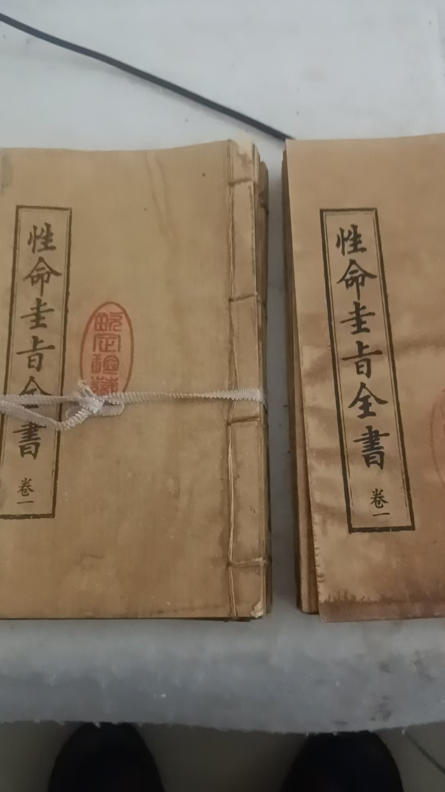
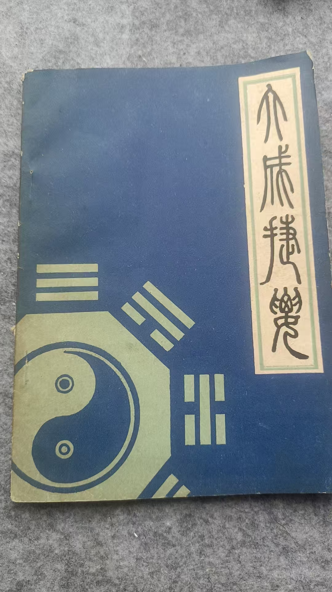
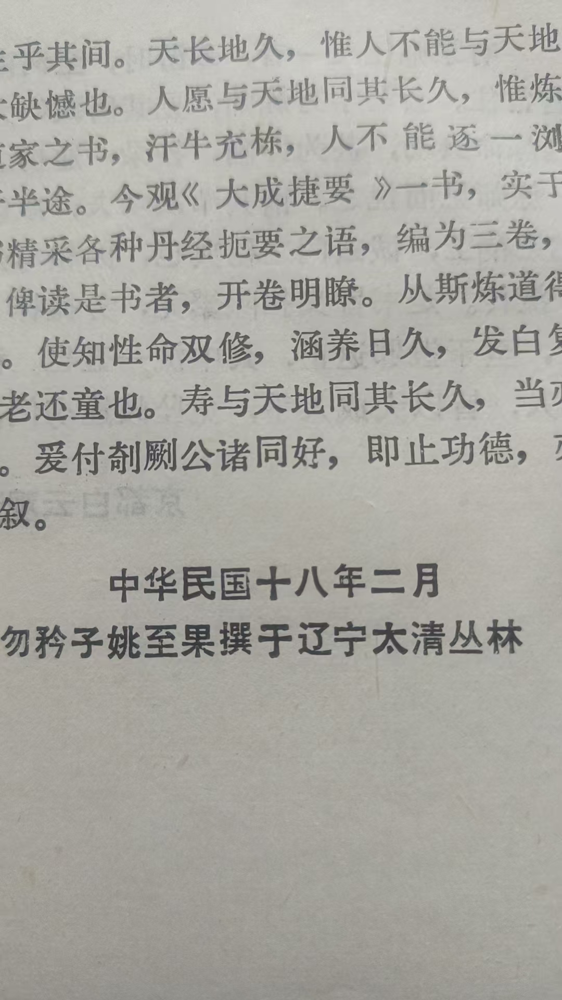
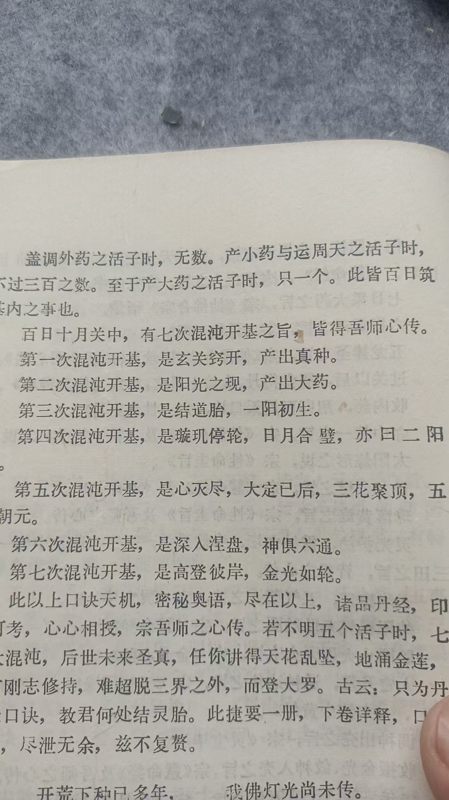

20260527性命圭旨 大成捷要 两本教科书
修炼修行符咒术法 原始对话记录
给学生买的书
这书里提到了儒家修炼
三教合一
学生自己买，不是买了盗版，就是一百六，一百九
我买是不到三十
这是仿古本
大成捷要，买不到旧本了
当时印的就不多
所谓的能量，是我区分气功时代的气，临时定的一个称呼
[强][强][强]
科委在八九十年代，测出特殊训练后，手上放出三到五千个电离子
常人几十个
所以科委当时科学的称呼，就是人体生物电离子
[强][强][强]
再一个意念拨电话号码，是脑电波，释放的电离子
那都是当时的科研成果
排斥能量，就直接不懂科学
老子都说，强为之名
叫他啥也不尽其意
脑电波就是咱们现在说的意念力，
修炼中的性功
心性，就是思维，意念力
哇，原来这么科学呀[鼓掌][鼓掌][鼓掌]
[合十][合十][合十]
手上放出的，就是命功中养命之本的，生物电离子
性命不同，又相同
微妙
所以说玄之又玄
又为什么叫生物电离子
那是区分雷击，跟机械发电
两者

又不同电鳗体内没有发电机械，为什么也产生十万伏特电压
这是真本

八十年代，沈阳重型机械厂，内部发行
崂山道

士朱文彬著一直到百日筑基，调神出窍，三年乳哺，九年面壁
九转五行，再加上这两本书，
修成，足矣
这两本就是教科书
以下为编者整理的主题文章
编者整理 · 主题文章
《性命圭旨》与《大成捷要》：两本"教科书"
一句话结论：本页把《性命圭旨》《大成捷要》称作修习的"两本教科书"，并串讲"性功/命功""生物电离子"等概念与"百日筑基→九年面壁"的次第；是一份传统丹道教材与修炼阶次的清单式记录。
一、本页是什么
本页由几张书影和随讲文字组成，主题是给学生挑书。编者提到书里讲了"儒家修炼""三教合一"，并把《性命圭旨》《大成捷要》定为修习的两本教科书。因为原书不易得，他还提到学生自购常买到盗版、要一两百，而自己买的是不到三十的仿古本；《大成捷要》连旧本都难找，因为"当时印的就不多"。
二、两本"教科书"是什么
《性命圭旨》与《大成捷要》都是传统丹道一系常被引用的著作，讲的是"性命双修"的理与法。本页把它们并列，理由是：一本偏理（把修行讲清楚），一本偏法（把步骤讲清楚），合起来正好能当教材用。至于版本，本页并未夸大，只说"仿古本"、正版难寻。
三、性功与命功：一对概念
本页用很朴素的话把这一对讲开了：
| 概念 | 本页的说法 | 通俗理解 |
|---|---|---|
| 性功 | 脑电波就是意念力，修炼中的性功 | 偏"心性、思维、意念" |
| 命功 | 手上放出的，是命功中养命之本 | 偏"身体、气血、物质基础" |
| 关系 | 性命不同，又相同，微妙 | 二者互为表里 |
四、"生物电离子"的说法
本页给"能量"作了个来路解释：这个称呼是"我区分气功时代的气，临时定的"，并转述说科委在八九十年代测出"特殊训练后手上放出三到五千个电离子，常人几十个"，当时科学地称之为人体生物电离子；又举电鳗为例，说它体内没有机械也能产生高压。这些是原记录的转述，本站仅如实呈现，不作科学定论。
五、修炼阶次：从百日筑基到九年面壁
本页把次第顺手列了出来，可与两本书配套来看：
- 百日筑基 →
- 调神出窍 →
- 三年乳哺 →
- 九年面壁。
本页的结论是："九转五行，再加上这两本书，修成，足矣。"可见其定位是"教材 + 方法"两手抓。
六、常见问题
问：为什么强调"教科书"？ 因为它把散乱的师授固定成可读可查的文本，学生照着有据可依。
问："生物电离子"是科学结论吗？ 这是原记录里的一种说法与转述，本篇不将其当作科学定论，仅作文化记录。
问：新手该先读哪本？ 本页是"两本配套"的意思，未指定先后；建议先理后法，配合师授。
七、提醒
- 两本书属传统丹道文献，本篇只作介绍与转述；
- 功法次第为传统说法，不承诺任何功效；
- 读书与研究请理性，健康问题请就医。
说明与免责：本站为民间修炼、民俗文化与传统文化资料的整理与记录，内容源自传承者口传与个人修习体会，仅供文化交流与研究参考，不构成医疗、健康、投资或任何功效承诺。所述内容属传统术数范畴，请理性看待；如身体不适，请及时就医。请遵守法律法规与公序良俗。